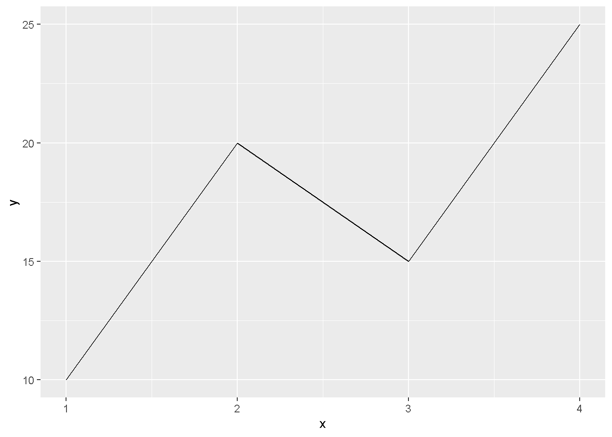
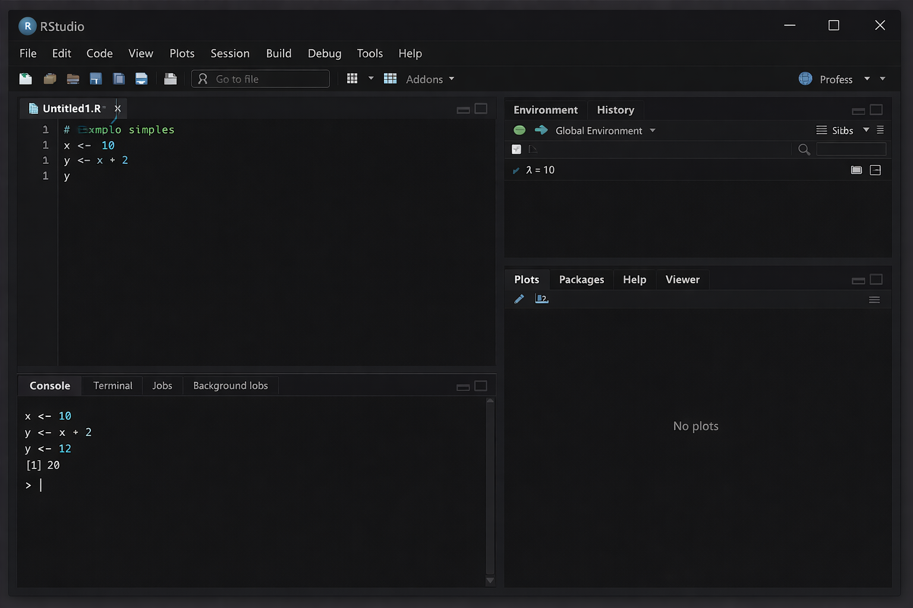

Código
library(ggplot2)
dados <- data.frame(
x = c(1,2,3,4),
y = c(10,20,15,25))
ggplot(dados, aes(x, y)) + geom_line()


Estatística e Probabilidade
Prof. Ben Dêivide (DEFIM/CAP/UFSJ)
A linguagem R é uma ferramenta poderosa e gratuita utilizada mundialmente para estatística, análise de dados e ciência de dados. Ela foi criada por Robert Gentleman e Ross Ihaka na Universidade de Auckland, Nova Zelândia, e hoje é mantida pela R Foundation for Statistical Computing.
O grande diferencial do R é que ele não é apenas um software, mas sim uma linguagem de programação completa, o que significa que você pode escrever comandos para que o computador execute tarefas exatamente como você deseja. Mesmo parecendo complicado no início, com um pouco de prática e seguindo este guia, qualquer pessoa consegue aprender e dominar suas funções básicas.
Este material tem como objetivo apresentar os conceitos fundamentais da linguagem R de forma simples e objetiva. Nosso foco é guiar o iniciante desde o processo de instalação até a compreensão de como o R organiza e trabalha com as informações, fornecendo exemplos práticos para facilitar o aprendizado.
Para começar a usar, primeiro precisamos instalar dois programas:
OBS: Após instalar, ao abrir o RStudio, você verá que ele já conecta automaticamente com o R que você instalou primeiro
Mais detalhes sobre as instalações do R e Rstudio podem ser vistas nas videos aulas e nos livros disponivel em https://bendeivide.github.io/.
O R tem três princípios (CHAMBERS, 2016) fundamentais que é necessario conhecer: o princípio do objeto (tudo que existe em R é um objeto), o princípio da função (tudo que acontece no R é uma chamada de função), e o princípio da interface (interfaces para outros programas são parte do R). Quando você abre o RStudio, a tela é dividida em 4 partes principais, que chamamos de quadrantes:
Como funciona: Você escreve o comando no Editor, aperta (Ctrl + Enter) e o resultado aparece no Console. Assim como esta na imagem a seguir.

Para conseguirmos escrever o nosso relatorio ou texto, precisamos de usar pacotes que armazenaram as nossas informações.
O R já vem com várias funções prontas, mas a comunidade cria ferramentas novas o tempo todo. Essas ferramentas extras são os Pacotes.
Para instalar: Usamos “install.packages(”nome_do_pacote”)“. Para usar: Usamos”library(nome_do_pacote)“.
Dica: Você instala apenas uma vez, mas precisa carregar (“library”) sempre que abrir o programa.
Temos pacotes como:
1- O ggplot2, é usado para gráficos. Exemplo:
library(ggplot2)
dados <- data.frame(
x = c(1,2,3,4),
y = c(10,20,15,25))
ggplot(dados, aes(x, y)) + geom_line()
Gera um gráfico de linha.
2- O dplyr, usado para organizar e filtrar dados. Exemplo:
library(dplyr)
dados <- data.frame(nome = c("Ana", "João", "Carlos"),
idade = c(20, 25, 30))
dados %>%
filter(idade > 20) nome idade
1 João 25
2 Carlos 30Filtra pessoas com idade maior que 20.
3- O tidyr, arruma dados “bagunçados”. Exemplo:
library(tidyr)
dados <- data.frame(
nome = c("A", "B"),
nota1 = c(7,8),
nota2 = c(9,10))
pivot_longer(dados, cols = nota1:nota2)# A tibble: 4 × 3
nome name value
<chr> <chr> <dbl>
1 A nota1 7
2 A nota2 9
3 B nota1 8
4 B nota2 10Transforma dados de formato largo → longo.
4- O readr, para importar arquivos. Exemplo:
library(readr)
#dados <- read_csv("dados.csv")Lê arquivos CSV.
5- O shiny, criar aplicativos interativos. Exemplo simples:
library(shiny)
ui <- fluidPage("Olá, mundo!")
server <- function(input, output) {}
shinyApp(ui, server)Cria um app básico.
6- O knitr, usado em R Markdown. Exemplo:
knitr::kable(head(mtcars))| mpg | cyl | disp | hp | drat | wt | qsec | vs | am | gear | carb | |
|---|---|---|---|---|---|---|---|---|---|---|---|
| Mazda RX4 | 21.0 | 6 | 160 | 110 | 3.90 | 2.620 | 16.46 | 0 | 1 | 4 | 4 |
| Mazda RX4 Wag | 21.0 | 6 | 160 | 110 | 3.90 | 2.875 | 17.02 | 0 | 1 | 4 | 4 |
| Datsun 710 | 22.8 | 4 | 108 | 93 | 3.85 | 2.320 | 18.61 | 1 | 1 | 4 | 1 |
| Hornet 4 Drive | 21.4 | 6 | 258 | 110 | 3.08 | 3.215 | 19.44 | 1 | 0 | 3 | 1 |
| Hornet Sportabout | 18.7 | 8 | 360 | 175 | 3.15 | 3.440 | 17.02 | 0 | 0 | 3 | 2 |
| Valiant | 18.1 | 6 | 225 | 105 | 2.76 | 3.460 | 20.22 | 1 | 0 | 3 | 1 |
Cria tabela formatada no relatório.
7- O lubridate, facilita trabalhar com datas. Exemplo:
library(lubridate)
data <- ymd("2026-04-11")
year(data)[1] 2026Extrai o ano. E entere outros pacotes.
Como em outras linguagens, no R tanbém possue diversas funções.
Funções são “receitas de bolo” prontas. Elas pegam informações, processam e devolvem um resultado. Tudo no R é função! Elas sempre têm parênteses (). As funções básicas como sum(): soma os valores, mean(): calcula a media, e o sqrt() : calcula a raiz quagrada, achar o minimo, são amplamente utilizadas para operações matemáticas, enquanto funções como data.frame() : criar tabelas, e subset() : filtrar dados são empregadas na manipulação e organização de dados. Temos outros como o max() : achar o maximo, o min() : o c() : conbinar valores, o <- (atribuição), o plot() : graficos basicos, o summary() : resumo estatístico, e muitos outros.
Exemplo:
# Criando um vetor de notas
notas <- c(7, 8, 5, 9, 6)
# Soma das notas
soma <- sum(notas)
# Média
media <- mean(notas)
# Maior nota
maior <- max(notas)
# Menor nota
menor <- min(notas)
# Quantidade de alunos
quantidade <- length(notas)
# Mostrando resultados
soma[1] 35media[1] 7maior[1] 9menor[1] 5quantidade[1] 5Já que até aqui, vimos como intalar o R e o Rstodio, vimos como R trabalha e os seus quadrantes, ouseja, a interface do Rstudio, sabemos oque são pacotes e conhecemos alguns deles, sabemos oque é uma função e conhecemos algumas funções.
Agora daremos um passo a mais, saberomos como se cria um projeto no R.
Para manter seu trabalho organizado, é ideal criar um Projeto no RStudio. Cria-se uma pasta específica onde tudo (códigos, dados, resultados) fica salvo junto.
Para criar um projeto primeiramente vamos clicar em “File” -> “New Project”, depois escolhemos “New Directory” -> “New Project”, em seguida damos um nome ao projeto, ex: “MeuPrimeiroProjeto”, e clicamos em “Create Project”“.
Ao seguir esse passos o seu projeto estara pronto para ser elaborado.
Agora, aprenderemos sobre a estrutura dos dados e como se faz a importação e exportação dos dados no R.
No R, as informações são organizada e armazenada em formatos diferente. Alguns desses formatos, mais usados são:
1- O vetor (Vector), sendo a estrutura mais básica que guarda valores do mesmo tipo.
Exemplo:
x <- c(1, 2, 3, 4)Podem ser números, como tambem texto.
nomes <- c("Ana", "João", "Carlos")2- A matriz (Matrix), são dados em formato de tabela (linhas e colunas), onde todos os elementos são do mesmo tipo.
Exemplo:
matriz <- matrix(c(1,2,3,4), nrow = 2, ncol = 2)3- O Data Frame, sendo mais usada no dia a dia como a realização de uma tabela do Excel, e pode ter tipos diferentes em cada coluna.
Exemplo:
dados <- data.frame(
nome = c("Ana", "João"),
idade = c(20, 25),
aprovado = c(TRUE, TRUE))Ele acaba misturando texto, número e lógico.
4- A lista (List), que pode guardar qualquer coisa dentro, e possui uma estrutura mais flexível.
Exemplo:
lista <- list(
nome = "Ana",
idade = 20,
notas = c(7, 8, 9))Ela pode ter vetor, número, texto tudo junto.
5- O fator (Factor), sendo usado para categorias.
Exemplo:
sexo <- factor(c("Masculino", "Feminino", "Feminino"))Ele é muito usado em estatística.
Um exemplo usando todos juntos:
# Vetor
notas <- c(7, 8, 9)
# Matriz
mat <- matrix(notas, nrow = 3)
# Data frame
df <- data.frame(nome = c("Ana", "João"), nota = c(7, 8))
# Lista
lista <- list(df, notas)È claro que os formatos não são só esses, existe varios, esses são os basicos para termos a minima ideia de como funcionam.
Em relação a importação e exportação de dados, vejamos que mutas das vezes temos dados em arquivos Excel ou CSV e queremos trazer para o R.
Para importar esses dados, ou melhor, para trazer esses dados para dentro, usaremos uma linha de codigo para cada caso.
Para arquivos CSV, escrevemos o seguinte:
#meus_dados <- read.csv("dados.csv", header = TRUE)Agora para arquivos Excel precisaremos liberar o pacote ‘readxl’, por isso escrevemos o seguinte:
library(readxl)
#meus_dados <- read_excel("dados.xlsx")Depois de fazer tudo isso o R precura o nosso arquivo, e encontrando ele da uma observasação, entende, transforma em Data Frame (em formato de tabela),e guarda dentro da caixinha que nomeamos de “meus_dados”.
Se depois do R fazer isso e não enviar nenhuma mensagem é porque deu certo, pois o silencio é a resposta preferida do computador, porem se aparecer vermelho é porque deu alguma coisa errada então precisamos ver oque colocamos errado.
Para fazer a exportação salvando um data frame como CSV, escrevemos o seguinte:
#write.csv(minha_tabela, file = "minha_tabela_pronta.csv")Após isso, o R pega na tabela que foi criado quando fizemos a importação, e faz um arquivo de verdade na pasta.
Agora, falaremos de uma das coisas mais lindas realizada pelo R, que é a sua interação com outras linguagens.
Uma das grandes vantagens do R é a sua flexibilidade e capacidade de se conectar com outras ferramentas. Ele não funciona sozinho; ele “conversa” com outras linguagens de programação, bancos de dados e sistemas, permitindo que você use o melhor de cada mundo em um mesmo projeto.
Isso é muito importante porque cada uma das linguagem tem o seu ponto forte. O R é melhor para estatística e gráficos, o Python é ótimo para machine learning e automação, o SQL é essencial para bancos de dados grandes, e o C/C++ serve para deixar cálculos muito mais rápidos.
Principais Integrações
1- A integração com Python: é a parceria mais famosa! Com o pacote “reticulate”, você pode rodar código Python diretamente dentro do seu script R, usar bibliotecas Python (como Pandas ou Scikit-learn) e trocar dados entre as duas linguagens facilmente.
Exemplo Prático:
# Carregar o pacote
library(reticulate)
# Agora você pode escrever código Python usando py_run_string()
py_run_string("
import numpy as np
numeros = np.array([1, 2, 3, 4, 5])
print(numeros.mean())
")3.02- A integração com C e C++: quando você precisa fazer cálculos muito pesados ou rápidos, o R pode chamar funções escritas em C ou C++. Isso é muito usado por desenvolvedores de pacotes para deixar o software mais eficiente. Usando as funções como o “C()” ou “Call()” conectamos com os códigos compilados.
3- A integração com Bancos de Dados (SQL): não precisamos importar todos os dados para o R. Pode se conectar diretamente em servidores como MySQL, PostgreSQL, SQL Server e fazer consultas usando a linguagem SQL sem sair do RStudio.
Exemplo com SQLite:
# Pacote para conexão
library(RSQLite)
# Conectando ao banco
con <- dbConnect(SQLite(), dbname = "meu_banco.db")
# Escrevendo uma consulta SQL dentro do R
#dados <- dbGetQuery(con, "SELECT * FROM tabela_clientes WHERE idade > 18")
# Ver o resultado
#head(dados)4- A integração com LaTeX e Markdown: o R trabalha muito bem com ferramentas de escrita de documentos. Com o pacote “rmarkdown”, você cria relatórios, PDFs, apresentações e sites que misturam texto, código R e os resultados automaticamente. É a base do que chamamos de Ciência Reprodutível.
Tambem temos outras linguagens que o R tem interfaces, como o Java (pacote “rJava”), a Julia (para computação de alto desempenho), e o Fortran (muito usado em cálculos matemáticos antigos e robustos).
Portanto, esses foram as principais estruturas do corpo da linguagem R.
Apresentamos os principais fundamentos da linguagem R, desde a instalação, organização da interface, uso de funções, pacotes e manipulação de dados. Vimos que, apesar de exigir prática inicial, o R é uma ferramenta poderosa, gratuita e versátil, capaz de se integrar com outras linguagens.
Aprender R exige dedicação, mas os benefícios são enormes. Com os conceitos aqui apresentados, você já possui a base necessária para desenvolver projetos, analisar informações e evoluir nos estudos de estatística e ciência de dados.
BRITO, Ben Dêivide. leem: Learning from Elementary Statistics Methodology. Disponível em: https://bendeivide.github.io/leem/. Acesso em: 12 de abr. de 2026.
CHAMBERS, John M. Extending R. Boca Raton: CRC Press, 2016..
DALGAARD, Peter. Estatística Básica com R. Rio de Janeiro: Elsevier, 2008.
IHAKA, Ross; GENTLEMA
KABAKOFF, Robert. R in Action: Data Analysis and Graphics with R. 2. ed. Manning Publications, 2015.
POSIT. RStudio Documentation. Disponível em: https://posit.co/resources/. Acesso em: 12 de abr. de 2026.
R CORE TEAM.R: A Language and Environment for Statistical Computing. Vienna: R Foundation for Statistical Computing, 2025. Disponível em: https://www.R-project.org/. Acesso em: 12 de abr. de 2026.
WICKHAM, Hadley; GROLEMUND, Garrett. R para Ciência de Dados. 1. ed. Disponível em: https://livro.curso-r.com/. Acesso em: 12 de abr. de 2026.
WICKHAM, Hadley. Advanced R. 2. ed. Boca Raton: CRC Press, 2019. Disponível em: https://adv-r.hadley.nz/. Acesso em: 12 de abr. de 2026.